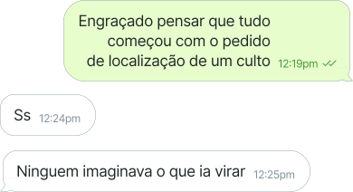
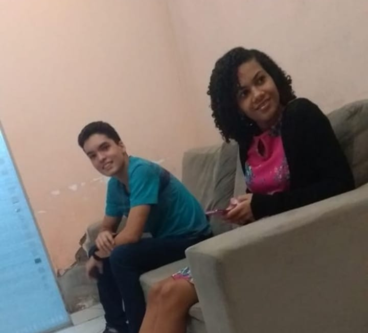
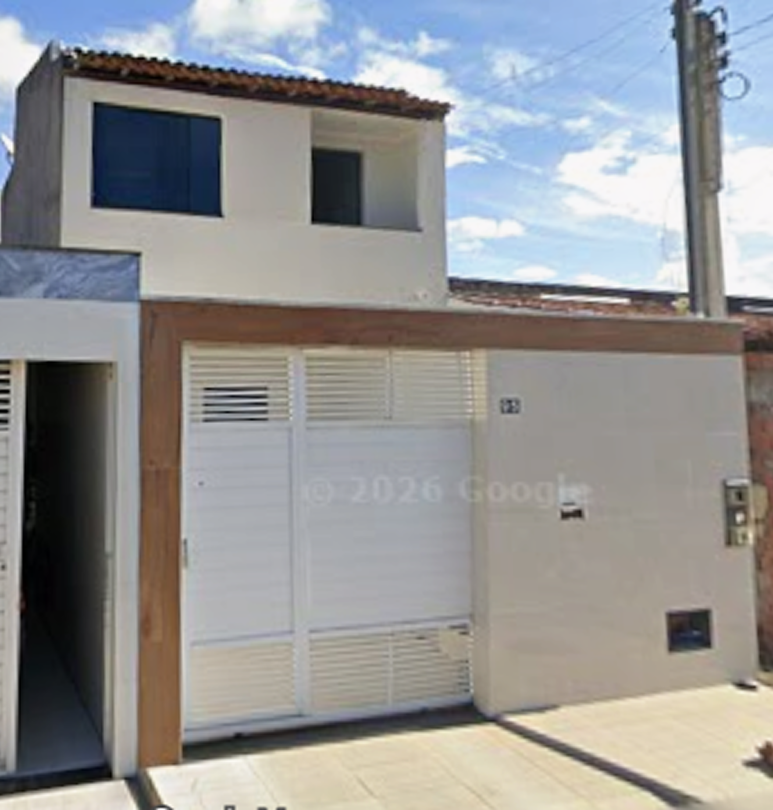
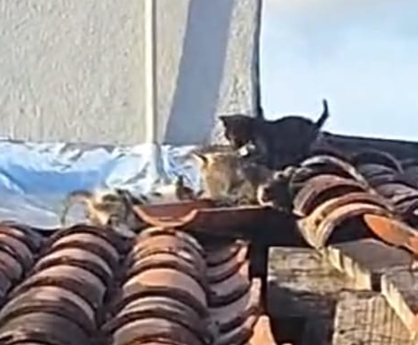
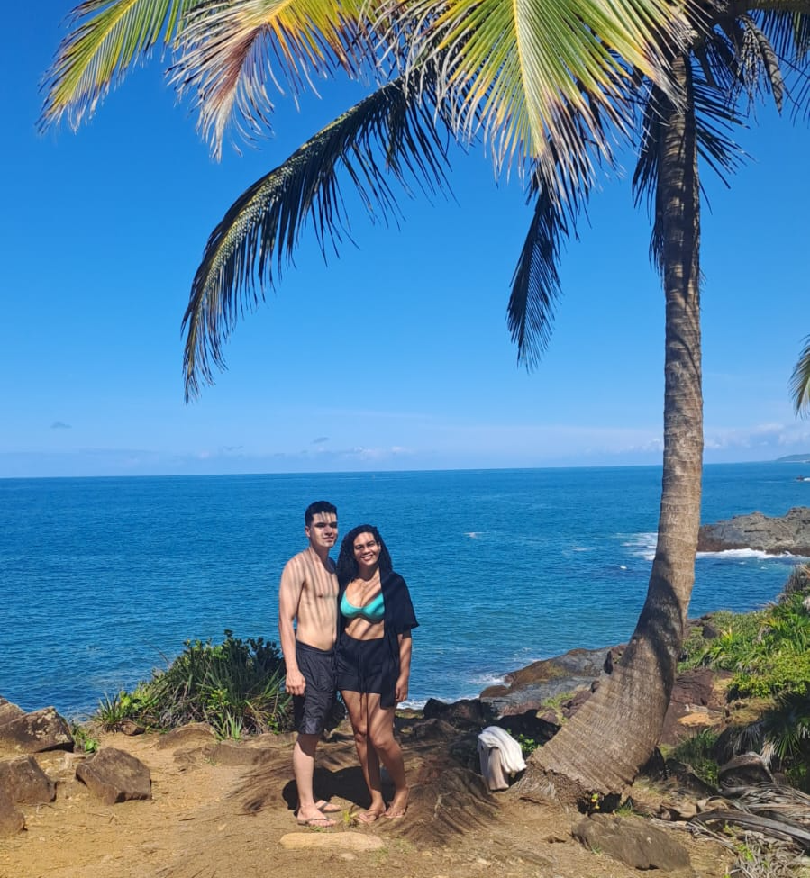
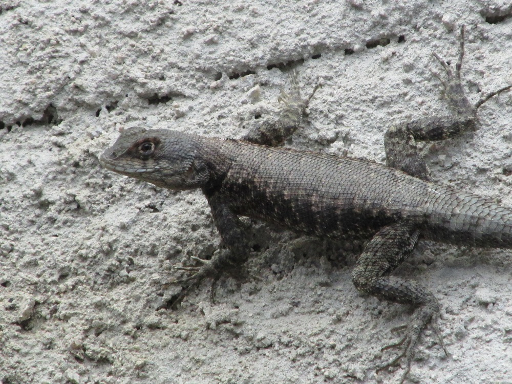

O tempo passa, mas o amor se reafirma.
Acima de tudo, porém, revistam-se do amor, que é o elo perfeito.
Colossenses 3:14

O tempo passa, mas o amor se reafirma.
Acima de tudo, porém, revistam-se do amor, que é o elo perfeito.
Colossenses 3:14
Nossa Retrospectiva
Parece que foi ontem que a nossa história começou, mas já vivemos 7 anos juntos. Cada risada, cada abraço e cada capítulo que escrevemos merece ser relembrado. Preparada para viajar um pouco no tempo?
Hora de olhar para trás!
Já vivemos muitas coisas juntos,
vamos relembrar algumas delas.

Nossa historia
Nossa primeira conversa
Nada muito especial.
30/03/2019

A declaração
Ele disse o que sentia.
A resposta foi incerta e pouco esperançosa, mas não demorou e ela não
resistiu.
23/04/2019

O primeiro
"Eu te amo"
O sentimento crescia e não dava mais pra ficar calado.
13/05/2019
O Início
Ela disse "sim", mas o mais difícil ainda estava por vim.
19/06/2019

Onde tudo começou
Carossel
Entendedores entenderão.
19/12/2020
?
O segudo
"sim"
O dia em que foi dado um grande passo: o noivado.
Não tinha mais volta.
12/12/2023

Noivos
Nossa casa
Lar doce lar!
Oportunidade na hora certa.
01/02/2024

Mansão
O "sim" definitivo
O dia mais importante!
Bastante cansativo, mas único e especial.
22/09/2024

Casados
Primeira viajem
A primeira viajem juntos a gente nunca esquece.
Tinha até parque, só que sem montanha russa.
23/09/2024
Primeira de muitas
Primeira guerra
Gata promíscua.
Tem os filhos e vem cuidar no nosso telhado.
Pulgas malditas.
10/2024

Primeira de três
O melhor destino
Tão esperada e aguardada.
Itacare, voltaremos em breve.
18/05/2026

Viajem perfeita
Nosso pet
Gustave
Chegou e logo se acomodou.
Triste porque pouco ficou.
06/2026

Em memoria
Por enquanto é isso
Muitas aventuras ainda estão por vim.
Os Votos
Aqui está escrito nosso compromisso e promessa, a qual temos como desejo cumpri a cada dia!
Querida, quando olho para o passado, percebo o quanto Deus tem nos abençoado e como seus planos são
perfeitos.
Lembro de quando nos conhecemos, até o dia em que decidi falar o que sentia por você e, mesmo com a sua
primeira reação não muito clara ou motivadora, a partir daquele momento ficamos mais próximos.
Não demorou muito para começarmos o nosso namoro, sei que você se lembra bem disso, não é?
A partir daí cada experiência trazia um aprendizado sobre o outro.
Foram vários os momentos, felizes e
alguns desafiadores, mas que sempre fortaleciam a nossa união e firmavam nosso amor.
À medida que eu ia te conhecendo, me apaixonava mais. Sua força, determinação, preocupação e esforço
para fazer tudo certo, junto com seu sorriso, humor e brincadeiras, trouxeram leveza para os meus dias.
São diversos os detalhes que te tornam tão especial para mim.
Hoje, olhando para você, não vejo apenas o presente nesse momento tão importante, mas vejo também o
nosso futuro e nosso lar. Estou ansioso para dividir com você cada dia das nossas vidas e juntos viver
aventuras, vencer desafios e realizar sonhos.
Agora, diante de todos aqui presentes, prometo seguir o que Deus nos ensina sobre amor em 1 Coríntios
13:4-7. Que o nosso amor seja paciente, bondoso e que tudo suporte com fé, esperança e alegria.
Agradeço a Deus por nos unir e guiar até aqui, e peço a Ele sabedoria para vivermos a nova fase de
nossas vidas.
Amor, estou muito feliz com a nossa união e animado para fortalecê-la ainda mais.
Te amo infinito.
A maioria das pessoas que me conhecem sabem que eu não gosto dessas demonstrações de carinho, mas,
apesar disso, eu escolhi te dizer o quanto estou feliz em dividir o altar contigo.
Eu poderia falar do neto que passava as noites acordado cuidando da avó doente, poderia falar do filho
maravilhoso que você é ou do genro que minha mãe ama, aquele que come algumas gororobas que aparece na
cozinha lá de casa. Todos esses são qualidades admiráveis, principalmente a última.
Porém, no dia de hoje, após cinco anos dividindo os dias contigo, escolhi falar do homem que antes de
começarmos a namorar assistiu todos os filmes do Rei Leão porque eu falei que gostava, que se
preocupa e reclama quando eu não tomo café da manhã (o que acontece na maioria dos meus dias), que
acorda as 4h da manhã para que possamos viver o dia de hoje e todos os outros que virão, que transforma
os meus sonhos em seu (essa festa é a prova disso), que é paciente, carinhoso e que tem sempre um “a
gente dá um jeito” disponível para me dizer quando eu começo a ficar nervosa e nesses dez meses de
noivado foram ditos muitos
Enfim, você é muito mais do que eu pediria a Deus, até porque, quando era mais nova e minha mãe disse
que eu tinha que orar pelo meu futuro marido, eu só pedi cabelo liso (até porque eu achava que não daria
conta de mim e uma criança cacheada) aí o resto eu deixo para Deus e nem se eu tivesse feito uma lista
teria pensado em alguém tão especial quanto você.
Apesar de sermos extremamente diferentes, você é paciente, eu sou estressada, você é do tipo tranquilo e
eu mais agitada, você pensa muito antes de fazer algo e eu quero que faça logo. Apesar disso tudo, não
imagino viver a vida com mais ninguém.
Eu escolhi te amar todos os dias durante os cinco anos que passaram e prometo te amar em todos os outros
que virão. Prometo ser seu lar, prometo não reclamar quando você ficar repetindo a mesma música no
violão até conseguir acertar, e o mais importante, prometo sempre pedir para fazer cosquinha em você,
mesmo que não importe a resposta que você vai dar.
Enfim, estou ansiosa por essa nova fase etapa que vamos viver e tenho certeza que Deus tem preparado o
melhor para nós.
Te amo infinito e para sempre.
O Futuro
EM BREVE
Ops! Essa página ainda não está disponivel.
Coisas incríveis e emocionantes estão sendo vividas e logo estarão aqui.
© 2026 J&M. Todos os direitos reservados.